콘크리트기사 (2016-03-06 기출문제)
1과목: 재료 및 배합
1. 시방배합을 현장배합으로 고칠 경우에 고려하여야 하는 사항에 대한 설명으로 거리가 먼 것은?
- 혼화제를 희석시킨 희석수량을 고려하여야 한다.
- 골재의 함수상태를 고려하여야 한다.
- 5mm체에 남는 굵은 골재량 등 골재의 입도를 고려하여야 한다.
- 운반중 공기량의 경시변화를 고려하여야 한다.
(정답률: 78%)

2. 고성능AE감수제에 관한 설명으로서 옳은 것은?
- 고성능AE감수제는 고성능감수제 사용 콘크리트의 동결융해저항성능개선 및 응결시간 촉진을 목적으로 개발된 혼화제이다.
- 고성능AE감수제는 반응성고분자와 분산제가 주요 구성성분이며, 반응성고분자의 함유량이 증가할수록 슬럼프 로스는 감소한다.
- 고성능AE감수제를 적절히 사용한 콘크리트는 슬럼프값이 급격히 증가한다.
- 고성능AE감수제는 유동화제와 같이 타설현장에서 투입하여 사용하는 것이 일반적이다.
(정답률: 45%)
3. 다음 혼화제 중 굳지 않은 콘크리트의 작업성 변화를 목적으로 사용하는 혼화제가 아닌 것은?
- 감수제
- 고성능 유동화제
- 방청제
- AE감수제
(정답률: 85%)
4. 모래 A의 조립률이 3.2 이고, 모래 B의 조립률이 2.2인 모래를 혼합하여 조립률 2.8의 모래 C를 만들려면 모래 A와 B는 얼마의 비율로 섞어야 하는가?
- A : 30%, B : 70%
- A : 40%, B : 60%
- A : 50%, B : 50%
- A : 60%, B : 40%
(정답률: 74%)
5. 시멘트에 관한 설명 중 옳지 않은 것은?
- 시멘트가 풍화하면 탄산가스와 수분의 반응으로 인해 비중이 높아진다.
- 시멘트 분말의 비표면적을 크게 하면 강도의 발현이 빨라진다.
- 시멘트의 강도는 일반적으로 표준양생 재령 28일의 강도를 말한다.
- 시멘트 제조 시 첨가하는 석고의 양을 늘리면 응결속도가 지연된다.
(정답률: 69%)
6. 부순 굵은 골재 및 부순 굵은 골재를 사용한 콘크리트의 특징으로 틀린 것은?
- 강자갈을 사용한 콘크리트에 비해 작업성이 떨어진다.
- 물-시멘트비가 같은 경우 강자갈을 사용한 콘크리트보다 시멘트페이스트의 부착력을 높일 수 있다.
- 강자갈을 사용한 경우와 같은 슬럼프를 얻기 위해서는 단위 수량이 증가한다.
- 입형이 평평하기 때문에 강자갈보다 실적률이 높다.
(정답률: 58%)
7. 아래와 같은 굵은 골재의 표면건조포화상태의 밀도(Ds)를 구하는 식에서 B의 값으로 옳은 것은?
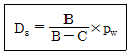
- 절대 건조 상태 시료의 질량(g)
- 시료의 수중 질량(g)
- 표면 건조 포화 상태 시료의 질량(g)
- 공기 중 건조 상태 시료의 질량(g)
(정답률: 82%)
8. 콘크리트 1m3를 만드는 배합설계에서, 단위 시멘트량이 320kg, 단위수량이 160kg, 공기량이 5% 이었다. 잔골재율이 35%, 잔골재 표건밀도가 2.7g/cm3, 굵은골재 표건밀도가 2.6/cm3, 시멘트의 밀도가 3.2g/cm3일 때, 단위잔골재량(S)은?
- 614kg
- 652kg
- 685kg
- 721kg
(정답률: 60%)
9. 30회 이상의 압축강도시험 실적으로부터 구한 압축강도의 표준편차가 5MPa 이고, 콘크리트의 설계기준 압축강도가 45MPa인 경우 배합강도는?
- 50MPa
- 51.7MPa
- 52.15MPa
- 53.15MPa
(정답률: 54%)
10. 골재의 체가름시험 방법에 대한 설명으로 틀린 것은?
- 시험에 사용되는 저울은 시료질량의 0.1% 이하의 눈금량 또는 감량을 가진 것으로 한다.
- 체가름은 1분간 각 체를 통과하는 것이 전 시료 질량의 0.1%이하로 될 때까지 작업을 한다.
- 체가름 계량 결과는 시료 전 질량에 대한 백분율로 소수점 이하 둘째자리까지 계산하여 소수점 이하 첫째자리까지 나타낸다.
- 체눈에 막힌 알갱이는 파쇄되지 않도록 주의하면서 되밀어 체에 남은 시료로 간주한다.
(정답률: 71%)
11. 골재의 안정성 시험에 대한 설명으로 틀린 것은?
- 이 시험은 기상작용에 대한 골재의 내구성을 조사하는 시험이다.
- 시험용 용액은 규정에 의해 제조한 황산나트륨 포화 용액으로 한다.
- 시험용 잔골재는 10mm체를 통과한 것이어야 한다.
- 시험용 굵은골재는 10mm체로 쳐서 남는 시료에 대해서만 시험한다.
(정답률: 47%)
12. 적절한 입도의 골재를 사용한 콘크리트의 특징으로 틀린 것은?
- 콘크리트의 워커빌리티가 증대된다.
- 소요 품질의 콘크리트를 만들기 위하여 단위수량 및 단위시멘트량이 많아진다.
- 재료분리 현상을 감소시킨다.
- 건조수축이 적어지며 내구성도 증대된다.
(정답률: 79%)
13. 시멘트의 강도시험(KS L ISO 679)에 대한 설명으로 틀린 것은?
- 치수 40mm×40mm×160mm인 각주형 공시체로 압축강도 및 휨강도 시험을 실시한다.
- 공시체는 질량으로 시멘트 1에 대해서 물/시멘트 비 0.5 및 잔골재 3의 비율로 모르타르를 성형한다.
- 틀에 다진 공시체는 24시간 습윤 양생하며, 그 후 탈형하여 강도 측정 시험을 할 때까지 수중 양생한다.
- 측정 재령에 이르렀을 때 시험체를 수중 양생조로부터 꺼내어 압축강도를 측정한 후 깨어진 시편으로 휨강도 시험을 한다.
(정답률: 68%)
14. 시멘트 성분 중에 Na2O가 0.5%, K2O가 0.4% 있었다면 이 시멘트에서 도입되는 전알칼리의 양은?
- 0.52%
- 0.76%
- 0.91%
- 1.⑤%
(정답률: 67%)
15. 굵은 골재의 밀도 및 흡수율 시험(KS F 2503)에서 각 무더기로 나누어서 시험한 굵은 골재의 밀도가 아래의 표와 같을 때 이 굵은 골재의 평균밀도를 구하면?
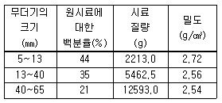
- 2.60g/cm3
- 2.62g/cm3
- 2.64g/cm3
- 2.66g/cm3
(정답률: 67%)
16. 포졸란 활성이나 잠재 수경성을 가지며, 주로 시멘트의 대체 재료로 이용되는 혼화재료가 아닌 것은?
- 팽창재
- 화산재
- 플라이애쉬
- 고로슬래그 미분말
(정답률: 68%)
17. 콘크리트 압축강도의 시험횟수가 22회일 경우 배합강도를 결정하기 위해 적용하는 표준편차의 보정계수로 옳은 것은?
- 1.04
- 1.06
- 1.08
- 1.10
(정답률: 67%)
18. 콘크리트의 배합설계에서 단위수량과 단위시멘트량에 대한 설명으로 틀린 것은?
- 압축강도와 물-결합재비와의 관계는 시험에 의해 정하는 것을 원칙으로 한다.
- 콘크리트의 수밀성을 기준으로 물-결합재비를 결정할 경우 그 값은 50%이하로 한다.
- 단위시멘트량은 원칙적으로 잔골재와 굵은골재의 수량비율에 따라 결정한다.
- 단위시멘트량은 소요강도, 내구성, 강재보호성능 등이 얻어지도록 시험에 의해 정한다.
(정답률: 45%)
19. 시멘트 비중 시험(KS L 5110)에 대한 설명으로 틀린 것은?
- 시험에 사용하는 광유는 온도 23±2℃에서 비중 약 0.5이상인 등유나 나프타를 사용한다.
- 달리 규정한 바가 없다면, 시멘트의 비중은 시료를 접수한 상태대로 시험한다.
- 포틀랜드 시멘트를 사용할 경우 약 64g의 시료를 사용한다.
- 동일 시험자가 동일 재료에 대하여 2회 측정한 결과가 ±0.03 이내이어야 한다.
(정답률: 54%)
20. 아래 표의 ( )에 공통으로 들어갈 용어로 옳은 것은?
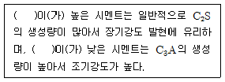
- 규산율(Silica Modulus)
- 수경률(Hydraulic Modulus)
- 강열감량(Ignition Loss)
- 활성도지수(Activity Index)
(정답률: 77%)
2과목: 제조, 시험 및 품질관리
21. 믹싱플랜트에서 완전히 반죽된 콘크리트를 애지테이터 트럭 혹은 트럭믹서로 교반하면서 목적지까지 운반하는 방법은?
- 센트럴믹스트 콘크리트
- 트랜싯믹스트 콘크리트
- 쉬링크믹스트 콘크리트
- 드라이믹스트 콘크리트
(정답률: 63%)
22. 콘크리트 재료의 계량에 대한 설명으로 틀린 것은?
- 계량은 시방배합에 의해 실시하는 것으로 한다.
- 골재가 건조되어 있을 때의 유효 흡수율 값은 골재를 적절한 시간 흡수시켜서 구한다.
- 혼화재를 녹이는 데 사용하는 물이나 혼화재를 묽게 하는 데 사용하는 물은 단위수량의 일부로 보아야 한다.
- 각 재료는 1배치씩 질량으로 계량하여야 하나, 물과 혼화제 용액은 용적으로 계량해도 좋다.
(정답률: 61%)
23. 콘크리트 압축강도 추정을 위한 반발경도 시험(KS F 2730)에 사용되는 테스트 헤머의 종류 중 보통 콘크리트용으로 사용되지 않는 것은?
- NR형
- NP형
- MTC형
- M형
(정답률: 58%)
24. 굳지 않은 콘크리트의 워커빌리티에 영향을 주는 사항에 대한 설명으로 틀린 것은?
- AE제를 사용하여 콘크리트의 워커빌리티를 개선할 수 있다.
- 동일한 배합조건에서 쇄석을 굵은 골재로 사용하는 경우 강자갈을 사용한 경우보다 워커빌리티가 나빠진다.
- 잔골재율이 지나치게 작으면 워커빌리티가 나빠진다.
- 단위수량이 크면 클수록 워커빌리티가 좋아진다.
(정답률: 68%)
25. 다음 콘크리트 재료 중 재료의 계량 허용오차가 가장 큰 것은?
- 골재
- 혼화재
- 시멘트
- 물
(정답률: 68%)
26. 콘크리트의 크리프에 영향을 미치는 요인에 대한 설명으로 틀린 것은?
- 습도가 낮을수록 크리프 변형은 커진다.
- 재하 하중이 클수록 크리프 변형은 커진다.
- 콘크리트 온도가 높을수록 크리프 변형은 커진다.
- 고강도의 콘크리트일수록 크리프 변형은 커진다.
(정답률: 50%)
27. 콘크리트의 받아들이기 품질검사에 대한 설명으로 틀린 것은?
- 슬럼프 시험은 압축강도 시험용 공시체 채취시 및 타설 중에 품질변화가 인정될 때 실시한다.
- 바다 잔골재를 사용할 경우 염소이온량 시험은 1일 1회 실시한다.
- 펌퍼빌리티 시험은 펌프 압송시 실시한다.
- 공기량 시험은 압축강도 시험용 공시체 채취시 및 타설 중에 품질변화가 인정될 때 실시한다.
(정답률: 74%)
28. 콘크리트 원주 공시체의 정탄성계수 및 포아송비 시험(KS F 2438)에서 350MPa까지의 콘크리트 탄성계수를 계산하기 위하여 S1과 S2를 구하여야 하는데 여기서 S1에 대한 설명으로 옳은 것은? (단, S2는 가해진 최대하중에 대한 응력(MPa)이다.)
- 세로변형 0.0000⑤cm에 대한 응력(MPa)
- 세로변형 0.000⑤cm에 대한 응력(MPa)
- 세로변형 0.00⑤cm에 대한 응력(MPa)
- 세로변형 0.0⑤cm에 대한 응력(MPa)
(정답률: 53%)
29. 품질의 목표를 정하고 이것을 달성하기 위해서 행하는 활동은?
- 인력관리
- 자재관리
- 품질관리
- 현장관리
(정답률: 70%)
30. 굳은 콘크리트의 압축강도에 영향을 미치는 요소에 대한 설명이 잘못된 것은?
- 단위 수량이 동일한 경우 시멘트량이 증가하면 압축강도는 증가한다.
- 물-시멘트비가 낮을수록 압축강도는 증가한다.
- 시험체의 재하속도가 느릴수록 압축강도는 증가한다.
- 공기량이 적을수록 압축강도는 증가한다.
(정답률: 60%)
31. 콘크리트의 건조수축에 대한설명으로 틀린 것은?
- 콘크리트의 건조수축은 부재가 노출된 환경오인 중 특히 상대습도에 직접적인 영향을 받는다.
- 건조수축에 가장 큰 영향을 미치는 인자는 배합에 사용된 단위수량이다.
- 부재의 크기가 클수록, 두께가 두꺼울수록 콘크리트의 건조수축은 감소한다.
- 골재의 체적의 변화가 다른 재료에 비하여 큰 편이기 때문에 콘크리트의 건조수축을 촉진한다.
(정답률: 38%)
32. 콘크리트 비비기에 대한 설명으로 틀린 것은?
- 콘크리트의 재료는 반죽된 콘크리트가 균질하게 될 때까지 충분히 비벼야 한다.
- 가경식 믹서를 사용하고 비비기 시간에 대한 시험을 실시하지 않은 경우 그 최소시간은 1분 30초 이상을 표준으로 한다.
- 강제식 믹서를 사용하고 비비기 시간에 대한 시험을 실시하지 않은 경우 그 최소시간은 2분 이상을 표준으로 한다.
- 비비기는 미리 정해둔 비비기 시간의 3배 이상 게속하지 않아야 한다.
(정답률: 60%)
33. 콘크리트는 일반적으로 강알칼리성을 띄고 있으나, 콘크리트중의 수산화칼슘이 공기 중의 탄산가스와 접촉하여 콘크리트의 알칼리성을 상실하는 현상은?
- 알칼리·탄산염 반응
- 중성화
- 염해
- 알칼리·실리카 반응
(정답률: 66%)
34. 레디믹스트 콘크리트의 제조설비에 대한 설명으로 틀린 것은?
- 믹서는 고정 믹서로 한다.
- 골재 저장 설비는 콘크리트 최대 출하량의 1주일분 이상에 상당하는 골재량을 저장할 수 있는 크기로 한다.
- 플랜트는 원칙적으로 각 재료를 위한 별도의 저장빈을 구비한다.
- 시멘트의 저장 설비는 종류에 따라 구분하고, 시멘트의 풍화를 방지할 수 있어야 한다.
(정답률: 69%)
35. 레디믹스트 콘크리트(KS F 4009)에서 규정하고 있는 콘크리트 회수수의 품질기준으로 틀린 것은?
- 염소이온량 : 350mg/L 이하
- 시멘트 응결시간의 차 : 초결 30분 이내, 종결 60분 이내
- 모르터 압축 강도비 : 재령 7 및 28일에서 90% 이상
- 단위 슬러지 고형분율 : 3.0%를 초과하면 안 됨
(정답률: 71%)
36. 콘크리트의 휨강도시험(KS F 2408)에 대한 설명으로 틀린 것은?
- 3등분점 재하법에 따라 공시체의 휨 강도를 측정하는 방법이다.
- 지간은 공시체 높이의 3배로 한다.
- 공시체에 하중을 가하는 속도는 가장자리 응력도의 증가율이 매초 0.6±0.4MPa이 되도록 한다.
- 공시체가 인장쪽 표면의 지간 방향 중심선의 3등분점의 바깥쪽에서 파괴된 경우는 그 시험 결과를 무효로 한다.
(정답률: 65%)
37. 모르타르 및 콘크리트의 길이 변화 시험에서 공시체의 중심축의 길이 변화를 측정하는 방법은?
- 현미경을 부착한 콤퍼레이터를 이용하는 방법
- 콘택트 스트레인 게이지를 시용하는 방법
- 다이얼 게이지를 부착한 측정기를 이용하는 방법
- 변형률 측정장치를 이용하는 방법
(정답률: 64%)
38. ø150㎜×300㎜인 콘크리트 표준공시체에 대하여 쪼갬인장강도 시험 결과, 하중 150kN에서 파괴되었다. 이 공시체의 인장강도는?
- 1.06 Pa
- 2.12 Pa
- 1.06 MPa
- 2.12 MPa
(정답률: 39%)
39. 굳지 않은 콘크리트의 워커빌리티 측정방법이 아닌 것은?
- 길모어침시험
- 슬럼프시험
- 구관입시험
- 비비시험
(정답률: 55%)
40. 콘크리트의 압축강도 시험결과가 다음 표와 같다. 이 콘크리트의 강도에 대한 변동계수는? (단, 표준편차 계산은 불편분산에 의한다.)
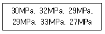
- 4.8%
- 7.3%
- 24.0%
- 36.5%
(정답률: 55%)
3과목: 콘크리트의 시공
41. 수중콘크리트에 대한 아래 표의 설명에서 ( )에 알맞은 것은?
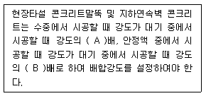
- A : 0.8, B : 0.7
- A : 0.7, B : 0.8
- A : 0.7, B : 0.7
- A : 0.6, B : 0.9
(정답률: 56%)
42. 슬럼프가 20mm 이하의 된반죽 공장제품 콘크리트의 반죽질기를 측정하는 시험으로 가장 적합하지 않은 것은?
- 슬럼프 시험
- 다짐계수 시험
- 관입시험
- 외압 병용VB 시험
(정답률: 58%)
43. 한중콘크리트 시공 시 비빈 직후 콘크리트의 온도 및 주위 기온이 아래의 조건과 같을 때, 타설이 완료된 후 콘크리트의 온도는?
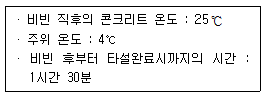
- 19.8℃
- 20.3℃
- 21.6℃
- 22.5℃
(정답률: 60%)
44. 매스콘크리트의 온도균열 방지 및 제어방법으로 적절하지 않은 것은?
- 팽창콘크리트의 사용에 의한 균열방지방법을 실시한다.
- 외부구속을 많이 받는 벽체 구조물의 경우에는 수축이음을 설치한다.
- 프리쿨링(Pre-cooling)과 파이프 쿨링(pipe cooling)을 한다.
- 프리웨팅(pre-wetting)을 한다.
(정답률: 66%)
45. 아래 표는 공장제품 콘크리트 양생방법 중 증기양생 작업 순서를 일반적으로 설명한 것이다. 이 중 틀린 것은?
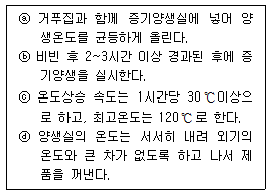
- ⓐ
- ⓑ
- ⓒ
- ⓓ
(정답률: 63%)
46. 일반적으로 현장 콘크리트 타설 시에 가장 많이 사용하는 다지기 방법은?
- 가압다지기
- 내부진동기
- 원심력다지기
- 압출성형
(정답률: 72%)
47. 매스콘크리트의 온도균열 발생에 대한 검토는 온도균열지수에 의해 평가하는 것을 원칙으로 하고 있다. 만약, 연질의 지반위에 타설된 평판구조 등과 같이 내부구속응력이 큰 구조물에서 △Ti(내부온도가 최고일 때 내부와 표면과의 온도차)가 12.5℃ 발생하였다면 간이적인 방법으로 온도균열지수를 구하면?
- 0.8
- 1.2
- 1.5
- 2.0
(정답률: 50%)
48. 일반 수중 콘크리트 타설의 원칙에 대한 설명으로 틀린 것은?
- 콘크리트 타설에서 완전히 물막이를 할 수 없는 경우 유속은 1초간 15cm 이하로 하여야 한다.
- 콘크리트를 수중에 낙하시키면 재료 분리가 일어나므로 콘크리트는 수중에 낙하시켜서는 안 된다.
- 콘크리트가 경화될 때까지 물의 유동을 방지하여야 한다.
- 한 구획의 콘크리트 타설을 완료한 후 레이턴스를 모두 제거하고 다시 타설하여야 한다.
(정답률: 58%)
49. 경량골재콘크리트에 관한 설명 중 옳지 않은 것은?
- 경량골재콘크리트의 설계기준압축강도는 15MPa이상, 24MPa 이하로 한다.
- 경량골재인 잔골재는 절건밀도가 0.0018g/㎣ 미만, 굵은 골재는 절건밀도가 0.0015g/㎣ 미만인 것을 말한다.
- 경량골재콘크리트의 기건단위질량은 1400~2000kg/m3 이다.
- 경량골재콘크리트의 공기량은 보통골재를 사용한 콘크리트보다 1%정도 작게 한다.
(정답률: 52%)
50. 시공 전에 계획하지 않은 곳에서 생겨난 이음으로서, 먼저 타설된 콘크리트와 나중에 타설되는 콘크리트 사이에 완전히 일체화가 되어 있지 않음에 따라 발생하는 이음은?
- 겹침이음
- 균열유발줄눈
- 콜드조인트
- 신축줄눈
(정답률: 67%)
51. 고강도 콘크리트에 대한 설명으로 틀린 것은?
- 고강도 콘크리트의 설계기준압축강도는 일반적으로 40MPa이상으로 하며, 고강도 경량골재 콘크리트는 27MPa이상으로 한다.
- 고강도 콘크리트에 사용되는 굵은 골재는 콘크리트 강도 및 워커빌리티 등에 미치는 영향이 크므로 선정에 세심한 주의를 하여야 한다.
- 기상의 변화가 심하거나 동결융해에 대한 대책이 필요한 경우를 제외하고는 공기연행제를 사용하지 않는 것을 원칙으로 한다.
- 잔골재율은 소요의 워커빌리티를 얻도록 시험에 의하여 결정하여야 하며, 가능한 많이 되도록 한다.
(정답률: 62%)
52. 프리플레이스트 콘크리트의 일반적인 사항에 대한 설명으로 잘못된 것은?
- 일반 프리플레이스트 콘크리트에서는 콘크리트의 품질을 높이기 위해 주입관의 간격을 작게 하는 시공방법을 채용하고 있다.
- 시공능률을 중시하는 대규모 프리플레이시스트 콘크리트에서는 굵은골재의 최소치수를 크게하고, 또, 주입모르타르를 부재합으로 하여 재료분리 저항성을 증대시켜 주입관의 간격을 크게 하는 방법이 사용되고 있다.
- 프리플레이스트 콘크리트는 보통콘크리트와 비교해서 콘크리트의 품질을 확인하기 용이하여 시공 시 결함 발생률이 낮으므로, 모르타르의 배합설계 단계가 특히 중요하다.
- 고강도 프리플레이스트 콘크리트는 고성능 감수제에 의해 주입모르타르의 물-결합재비를 40%이하로 낮춤에 따라 재령 91일에서 압축강도 40~60MPa의 압축강도를 얻을 수 있는 프리플레이스트 콘크리트를 말한다.
(정답률: 52%)
53. 숏크리트의 초기강도 표준값으로 옳은 것은?
- 재령 3시간에서 1.0~3.0MPa
- 재령 6시간에서 1.0~3.0MPa
- 재령 12시간에서 3.0~5.0MPa
- 재령 24시간에서 10.0~15.0MPa
(정답률: 62%)
54. 일반콘크리트의 타설에서 외기온도가 25℃를 초과한 경우 허용 이어치기 시간간격의 표준으로 옳은 것은?
- 1.5시간
- 2.0시간
- 2.5시간
- 3.0시간
(정답률: 56%)
55. 바닥틀에 관련한 시공이음에 대한 설명으로 옳지 않은 것은?
- 바닥틀의 시공이음은 슬래브 또는 보의 경간 중앙부 부근에 두어야 한다.
- 바닥틀과 일체로 된 기둥 또는 벽의 시공이음은 바닥틀과의 경게부분에 설치하는 것이 좋다.
- 보가 작은 보와 교차할 경우에는 작은 보폭의 3배 거리만큼 떨어진 곳에 보의 시공이음을 설치한다.
- 헌치 또는 내민 부분을 가지는 구조물에서는 바닥틀과 연속하여 콘크리트를 타설하여야 한다.
(정답률: 50%)
56. 해양콘크리트에 대한 설명으로 틀린 것은?
- 육상구조물 중에 해풍의 영향을 많이 받는 구조물도 해양 콘크리트로 취급하여야 한다.
- PS강재와 같은 고장력강에 작용응력이 인장강도의 60%를 넘을 경우 응력부식 및 강재의 부식피로를 검토하여야 한다.
- 만조위로부터 위로 0.6m, 간조위로부터 아래로 0.6m사이의 감조부분에는 시공이음이 생기지 않도록 시공계획을 세워야 한다.
- 시멘트는 보통포틀랜드 시멘트를 사용하는 것을 원칙으로 한다.
(정답률: 62%)
57. 일평균 기온이 15℃ 이상일 때 일반 콘크리트 습윤 양생기간의 표준으로 옳은 것은? (단, 보통포틀랜드시멘트-고로슬래그시멘트-조강보틀랜드시멘트를 사용한 콘크리트의 순서)
- 5일 - 7일 - 3일
- 7일 - 5일 - 3일
- 7일 - 9일 - 4일
- 9일 - 7일 - 4일
(정답률: 67%)
58. 고유동 콘크리트의 사용에 대한 일반적인 설명으로 틀린 것은?
- 보통 콘크리트로는 충전이 곤란한 구조체인 경우 사용하면 효과적이다.
- 균질하고 정밀도가 높은 구조체에는 부적합하다.
- 다짐작업에 따르는 소음, 진동의 발생을 피해야 하는 현장에서 사용하면 효과적이다.
- 다짐공의 숙련도에 의존하지 않으면서 소요의 역학적 특성을 만족하는 균질한 콘크리트 구조체를 만들 수 있다.
(정답률: 54%)
59. 팽창콘크리트의 팽창률에 대한 설명으로 틀린 것은?
- 수축보상용 콘크리트의 팽창률은 150×10-6이상, 250×10-6이하인 값을 표준으로 한다.
- 화학적 프리스트레스용 콘크리트의 팽창률은 200×10-6 이상, 700×10-6이하를 표준으로 한다.
- 공장제품에 사용하는 화학적 프리스트레스용 콘크리트의 팽창률은 100×10-6 이상, 700×10-6이하를 표준으로 한다.
- 콘크리트의 팽창률은 일반적으로 재령 7일에 대한 시험값을 기준으로 한다.
(정답률: 56%)
60. 숏크리트에 대한 아래표의 설명에서 ( )에 적합한 것은?
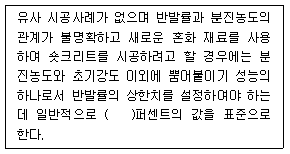
- 5~10
- 10~20
- 20~30
- 30~40
(정답률: 48%)
4과목: 구조 및 유지관리
61. 콘크리트 열화 중에서 알칼리-실리카반응으로 인한 현상이 아닌 것은?
- 알칼리-실리카겔이 표면으로 흘러나오기도 하고 균열 및 공극에 충전되기도 한다.
- 벽에서는 종방향 균열이 발생한다.
- 부재단부의 균열이나 팽창조인트부의 파손을 일으킨다.
- 골재입자의 둘레에 검은색의 반응환이 생긴다.
(정답률: 54%)
62. 아래 그림의 직사각형 단철근보에서 공칭전단강도(Vn)를 구하면? (단, 스터럽은 D13(공칭단면적 126.7mm2)을 사용하며, 스터럽 간격은 200mm, fyt=350MPa 이고, fck=28MPa 이다.)
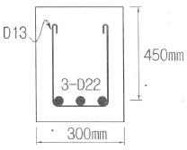
- 158.2kN
- 318.6kN
- 376.3kN
- 463.2kN
(정답률: 44%)
63. 아래 그림과 같은 조건에서 탄성파법에 의해 측정한 균열깊이(d)는? (단, Tc-To 법을 사용하며, 측정한 Tc=250㎲, To=120㎲이고, Tc는 균열을 사이에 두고 측정한 전파시간, To는 건전부 표면에서의 전파시간을 나타낸다.)
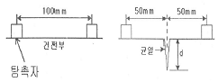
- 78.4mm
- 84.9mm
- 91.4mm
- 98.9mm
(정답률: 42%)
64. 아래 표에서 설명하는 비파괴 시험 방법은?
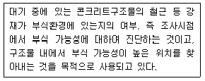
- 자연전위법
- 초음파법
- 방사선법
- 전자파법
(정답률: 59%)
65. 보강에 사용되는 재료인 유리섬유에 대한 일반적인 설명으로 틀린 것은?
- 유리섬유의 인장강도는 강섬유 인장강도의 1/2 정도이다.
- 흡수성이 없고, 전기 절연성이 크다.
- 탄소섬유와 비교하여 큰 밀도를 가진다.
- 고온에 견디며 불에 타지 않는다.
(정답률: 55%)
66. 철근간격 및 사용에 대한 설명으로 틀린 것은? (단, d는 보의 유효깊이(mm)이다.)
- 전단철근의 수직 스터럽의 간격은 0.5d 이하, 또 600mm 이하여야 한다.
- 상단과 하단에 2단 이상으로 배치할 경우 상하철근의 순간격은 25mm이상이어야 한다.
- 나선철근과 띠철근 기둥에서 축방향 철근의 순간격은 40mm 이상이어야 한다.
- 여러 개의 철근을 묶어서 사용하는 다발철근은 이형철근으로서, 그 개수는 5개이상이어야 한다.
(정답률: 63%)
67. 단면의 도심에 PS 강재가 배치되어 있으며 초기 프리스트레스 힘 120kN을 작용시켰다. 이때 15% 손실을 가정해서 콘크리트의 하연응력이 0이 되도록 하려면 휨모멘트는?
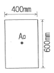
- 8.2kN·m
- 9.2kN·m
- 10.2kN·m
- 11.2kN·m
(정답률: 40%)
68. 철근 콘크리트의 역학적 해석에 관한 기본가정으로 틀린 것은?
- 철근 콘크리트 구조물 내에서 철근의 변형률은 철근을 둘러싸고 있는 콘크리트의 변형률과 같다.
- 철근 콘크리트 구조물에서 하중을 받기 전에 평면인 단면은 하중을 받은 후에도 평면을 유지한다.
- 콘크리트는 인장강도가 철근에 비하여 작기 때문에 콘크리트에는 균열이 발생하지 않는다.
- 허용응력설계법과 극한강도설계법에서는 콘크리트의 응력과 거동에 관한 기본 가정이 다르다.
(정답률: 48%)
69. 프리스트레스 하지 않는 부재의 현장치기 콘크리트에 대한 철근의 최소 피복두께 규정으로 틀린 것은?
- 수중에서 치는 콘크리트는 최소 100mm의 피복두께를 요구한다.
- 흙에 접하여 콘크리트를 친 후 영구히 흙에 묻혀 있는 콘크리트의 최소 피복두께는 80mm이다.
- 옥외의 공기나 흙에 직접 접하지 않는 콘크리트로서 fck가 40MPa 미만인 보의 경우 최소 피복두께는 40mm이다.
- 흙에 접하거나 옥외의 공기에 직접 노출되는 콘크리트로서 D16 이하의 철근을 사용하는 경우 최소 피복두께는 60mm이다.
(정답률: 44%)
70. 콘크리트 품질시험 중에서 현장시험이 아닌 것은?
- 초음파시험
- 시멘트함유량시험
- 반발경도시험
- 코아채취
(정답률: 66%)
71. 단면이 350㎜×350㎜이고 철근량이 3800mm2인 띠철근기둥(단주)의 축방향 설계강도(øPn)는? (단, fck=28MPa, fy=400MPa이고, 압축지배단면이다.)
- 2033kN
- 2259kN
- 3233kN
- 4459kN
(정답률: 43%)
72. 화재에 의한 콘크리트 구조물의 열화현상에 대한 설명으로 틀린 것은?
- 콘크리트는 약 300℃에서 중성화되기 쉽다.
- 콘크리트는 탈수나 단면내의 열응력에 의해 균열이 생긴다.
- 콘크리트의 가열로 인한 정탄성계수의 감소에 의해 바닥슬래브나 보의 처짐이 증가한다.
- 급격한 가열시 피복콘크리트의 폭렬이 발생하기 쉽다.
(정답률: 58%)
73. 피로에 대한 검토사항에 대한 설명으로 틀린 것은?
- 하중 중에서 변동하중이 차지하는 비율이 크거나 작용빈도가 클 경우 피로에 대한 검토를 한다.
- 보 및 슬래브의 피로는 휨 및 전단에 대하여 검토하여야 한다.
- 기둥의 피로는 보에 준하여 검토하여야 한다.
- 피로의 검토가 필요한 구조 부재는 높은 응력을 받는 부분에서 철근을 구부리지 않도록 하여야 한다.
(정답률: 54%)
74. 아래 표와 같은 조건에서 처짐을 계산하지 않는 경우의 보의 최소 두께로 옳은 것은?
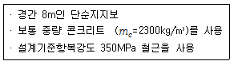
- 400mm
- 465mm
- 500mm
- 525mm
(정답률: 45%)
75. 강판접착공법의 시공순서가 올바른 것은?
- 표면조정 - 강판부착 - 씰링 - 주입 - 앵커장착 - 마감
- 표면조정 - 강판부착 - 앵커장착 - 주입 - 씰링 - 마감
- 표면조정 - 앵커장착 - 강판부착 - 씰링 - 주입 - 마감
- 표면조정 - 앵커장착 - 강판부착 - 씰링 - 마감 - 주입
(정답률: 59%)
76. 구조물의 사용성 평가 항목으로 거리가 먼 것은?
- 변형 및 변위의 육안 관찰
- 고유 진동수 계측
- 외벽 균열의 누수성 검토
- 단면 치수 계측
(정답률: 44%)
77. 재령 28일이 경과한 굳은 콘크리트의 수용성 염화물 이온량은 규정값을 초과하지 않도록 하여야 한다. 이때 부재의 종류에 따른 굳은 콘크리트의 최대 수용성 염소이온 비율로 옳은 것은? (단, 시멘트 질량에 대한 비율)
- 프리스트레스트 콘크리트 : 0.5%
- 염화물에 노출된 철근 콘크리트 : 0.15%
- 건조한 상태이거나 습기로부터 차단된 철근 콘크리트 : 0.5%
- 1, 2, 3 외의 철근 콘크리트 : 0.8%
(정답률: 50%)
78. 아래 그림과 같은 복철근 직사각형 보에서 압축연단에서 중립축까지의 거리(c)는 약 얼마인가? (단, As=6-D32=4764mm2, As=2-D29.1284mm2, fck=35MPa, fy=350MPa 이다.)
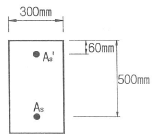
- 137mm
- 153mm
- 161mm
- 171mm
(정답률: 30%)
79. 철근콘크리트 보에서 전단철근에 대한 설명으로 틀린 것은?
- 보의 전단 저항 능력의 일부분을 분담한다.
- 경사균열의 폭을 제한하여, 골재의 맞물림에 의한 전단저항력을 증진시킨다.
- 종방향 철근의 다우얼력을 증진시킨다.
- 철근콘크리트 보에 전단철근 양은 많을수록 거동에 유리하다.
(정답률: 55%)
80. 다음 중 콘크리트의 중성화에 의하여 직접적으로 영향을 받는 열화는?
- 철근의 부식
- 건조수축
- 크리프 변형
- 레이턴스
(정답률: 63%)